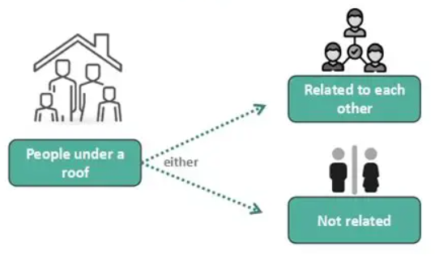

What is a household
Not the same thing as a family — and the difference runs through every statistic you will read.

DEFINITION
All persons occupying a dwelling and pooling income and expenses.
One person alone, relatives, or unrelated roommates — all households.
NOT THE SAME AS FAMILY
A family is defined by blood,
marriage or adoption; a household by shared residence and a shared budget.